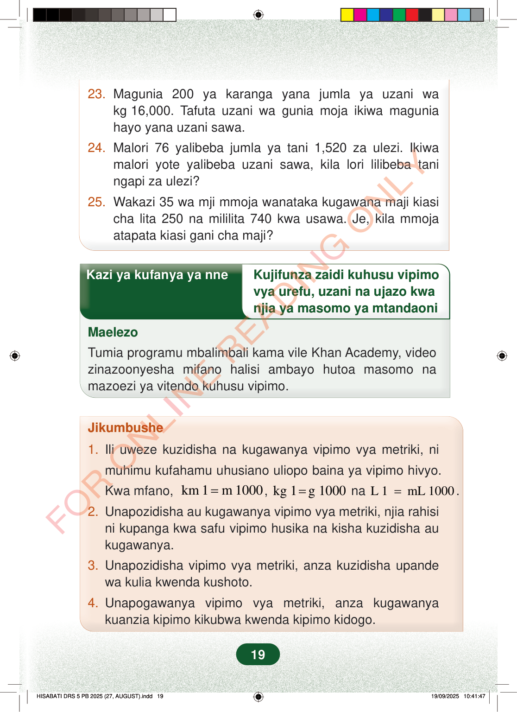

23.Magunia 200 ya karanga yana jumla ya uzani wakg16,000. Tafuta uzani wa gunia moja ikiwa maguniahayo yana uzani sawa.24.Malori 76 yalibeba jumla ya tani 1,520 za ulezi. Ikiwamalori yote yalibeba uzani sawa, kila lori lilibeba taningapi za ulezi?25.Wakazi 35 wa mji mmoja wanataka kugawana maji kiasicha lita 250 na mililita 740 kwa usawa. Je, kila mmojaatapata kiasi gani cha maji?Kazi ya kufanya ya nneKujifunza zaidi kuhusu vipimovya urefu, uzani na ujazo kwanjia ya masomo ya mtandaoniMaelezoTumia programu mbalimbali kama vile Khan Academy, videozinazoonyesha mifano halisi ambayo hutoa masomo namazoezi ya vitendo kuhusu vipimo.Jikumbushe1.Ili uweze kuzidisha na kugawanya vipimo vya metriki, nimuhimu kufahamu uhusiano uliopo baina ya vipimo hivyo.Kwa mfano,km 1m 1000=,kg 1g 1000=naL 1mL 1000=.2.Unapozidisha au kugawanya vipimo vya metriki, njia rahisini kupanga kwa safu vipimo husika na kisha kuzidisha aukugawanya.3.Unapozidisha vipimo vya metriki, anza kuzidisha upandewa kulia kwenda kushoto.4.Unapogawanya vipimo vya metriki, anza kugawanyakuanzia kipimo kikubwa kwenda kipimo kidogo.19
23. Magunia 200 ya karanga yana jumla ya uzani wa kg 16,000. Tafuta uzani wa gunia moja ikiwa magunia hayo yana uzani sawa.
24. Malori 76 yalibeba jumla ya tani 1,520 za ulezi. Ikiwa malori yote yalibeba uzani sawa, kila lori lilibeba tani ngapi za ulezi?
25. Wakazi 35 wa mji mmoja wanataka kugawana maji kiasi cha lita 250 na mililita 740 kwa usawa. Je, kila mmoja atapata kiasi gani cha maji?
Kazi ya kufanya ya nne Kujifunza zaidi kuhusu vipimo
vya urefu, uzani na ujazo kwa njia ya masomo ya mtandaoni
Maelezo
Tumia programu mbalimbali kama vile Khan Academy, video zinazoonyesha mifano halisi ambayo hutoa masomo na mazoezi ya vitendo kuhusu vipimo.
Jikumbushe
1. Ili uweze kuzidisha na kugawanya vipimo vya metriki, ni
muhimu kufahamu uhusiano uliopo baina ya vipimo hivyo.
Kwa mfano, km 1 m 1000 = , kg 1 g 1000 = na L 1 mL 1000 = .
2. Unapozidisha au kugawanya vipimo vya metriki, njia rahisi ni kupanga kwa safu vipimo husika na kisha kuzidisha au kugawanya.
3. Unapozidisha vipimo vya metriki, anza kuzidisha upande wa kulia kwenda kushoto.
4. Unapogawanya vipimo vya metriki, anza kugawanya kuanzia kipimo kikubwa kwenda kipimo kidogo.
19
23.Magunia 200 ya karanga yana jumla ya uzani wa kg 16,000.Tafuta uzani wa gunia moja ikiwa magunia hayo yana uzani sawa.24.Malori 76 yalibeba jumla ya tani 1,520 za ulezi.Ikiwa malori yote yalibeba uzani sawa, kila lori lilibeba tani ngapi za ulezi?25.Wakazi 35 wa mji mmoja wanataka kugawana maji kiasi cha lita 250 na mililita 740 kwa usawa.Je, kila mmoja atapata kiasi gani cha maji?Kazi ya kufanya ya nne kuhusu kujifunza zaidi vipimo vya urefu, uzani na ujazo kwa njia ya masomo ya mtandaoni. Maelezo yanasema kutumia programu kama Khan Academy na video zenye mifano halisi na mazoezi ya vitendo kuhusu vipimo.Kazi ya kufanya ya nneKujifunza zaidi kuhusu vipimo vya urefu, uzani na ujazo kwa njia ya masomo ya mtandaoniMaelezoTumia programu mbalimbali kama vile Khan Academy, video zinazoonyesha mifano halisi ambayo hutoa masomo na mazoezi ya vitendo kuhusu vipimo.Jikumbushe1.Ili uweze kuzidisha na kugawanya vipimo vya metriki, ni muhimu kufahamu uhusiano uliopo baina ya vipimo hivyo.Kwa mfano, km 1 = m 1000, kg 1 = g 1000 na L 1 = mL 1000.2.Unapozidisha au kugawanya vipimo vya metriki, njia rahisi ni kupanga kwa safu vipimo husika na kisha kuzidisha au kugawanya.3.Unapozidisha vipimo vya metriki, anza kuzidisha upande wa kulia kwenda kushoto.4.Unapogawanya vipimo vya metriki, anza kugawanya kuanzia kipimo kikubwa kwenda kipimo kidogo.